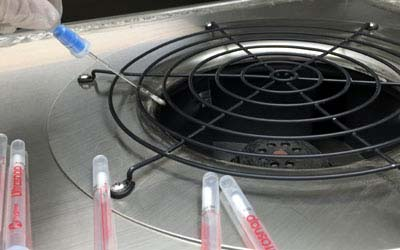
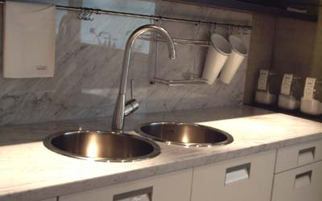

預防流感常識
| 人體抗病菌機能：人體具有自我抵抗微生物感染及回復之能力，其條件取決於人體的免疫力，包含飲食年齡等條件，免疫力越低得到感染機會越大，回復原狀也越慢，當人體經感染後，除了人體內細胞具有非特異免疫產生抵抗，另外也會由病原體刺激人體體液產生特異性免疫抵抗，此相互影響共禦感染，使再感染率下降。 |
| 美國亞歷桑納大學研究人員曾將八十人，在辦公大樓裡做了模擬實驗，結果發現病菌一旦附著於室內空間的門把或桌上，4小時內，就可以快速散播到整棟大樓，此時染上感冒的機率為40-90%。 |
| 大部份流感病毒喜歡酸性，我們人類血液PH質在7.35-7.4間，如果在7.2時就比較容易遭受流感侵入，人體之酸鹼值大都會維持在正常值；當偏酸時，有可能就是當免疫較弱的時候，也是細菌病毒入侵人體的好時機。 |
| 切斷生長環境： |
| 水：水是生命起源，有水的地方，就能夠讓微生物細菌病毒存活時間更長，甚至滋生繁衍。 |
| 溫度：大多數微生物對於高溫影響力較大， |
| 氧氣：分為厭氧、好氧、不需氧...等微生物， |
| PH：酸鹼值，對微生物生長大有其影響，在金屬面上，多數比較不易繁殖， |
| 浸透壓：多對於食物上處理， |

預防重於治療
| 避免與人近距離接觸及物體之接觸： 非必要，儘量不要觸摸、倚靠醫院的牆壁、扶手及任何物品，包括醫生護士的制服，除此外也避免密閉空間及人潮多的地方滯留。 |
| 正確戴口罩、勤洗手： 戴口罩可以減少飛沫感染的機會，但口罩一旦脫下就必需更換，口罩至少使用外科口罩，一般戴法與正確戴法其隔離細菌效果可差3-5倍，口罩應依鼻樑施力按住，並調整上下將鼻樑下至下巴處覆蓋住。在外有機會就多洗手，洗手需用洗手乳及搓柔至少15-20秒，回家後，衣服每日換更，每日洗澡，外出時比較沒有機會洗手時，可使用市售酒精棉片(單片密封裝)擦拭雙手消毒。 |
| 避免眼睛、嘴巴、鼻子接觸：因為手最容易接觸到細菌病毒，而我們的手又是離嘴巴鼻子最近的地方，因此要避免揉眼睛、摳鼻孔的動作，因為黏膜組織容易受到感染，更要注意病菌從口入。 |
| 充分睡眠與休息：不要敖夜、喝酒，並且適量運動、充份休息，並保持愉快的心情。空調濾網常清洗、居家保持乾燥及適當的溫度，飲食營養均衡， |
| 餐具勿共用：不要與人共用杯子或碗筷，這是細菌最快傳染的途徑，餐具清洗時要注意是否擦拭布乾淨，平常擦拭布可使用稀釋過的漂白水加以清洗消毒。 |
| 施打疫苗：可定期請教醫生施打相關疫苗，減低感染時之症狀。 |

環境清理
| 切斷感染源頭： |
| 宿主：提升自我免疫，均衡飲食，另外在運動部分，不要作太強烈運動，強烈運動之後數小時內，反而抵抗力會降低，適當規律運動才是正確，另外體脂肪不可過低過高，正常的男女體脂肪年紀越大會越高，男女、年紀也不同。男生大約在15-22%間，女生18-26%，過低(10%)以下，雖然外表健美，但其實對身體反而會負擔，造成抵抗力下降，過高也是一樣、增加身體負擔，容易導致其他併發症狀。 |
| 病源體數量與毒性環境：清理是最基本，重點消毒是手段，然而在人力範圍中，不可能所有地方都能處理到，只要有人接觸後就需清理消毒，因此須以重點環境清潔為主，在常接觸的地方，容易有髒污產生，是最需常清理的，也要避免室內地面灰塵多，能夠的話盡量保持通風，可降低病源數量及存活時間，在日常消毒中，噴霧、浸泡、擦拭等方法會依照不同消毒藥劑即被消毒物件間區分，降低減少病源數量及毒性， |
| 傳染途徑方法：自我防護，自我個人衛生，尤其以常洗手最為重要，切記任何乾洗手，酒精洗手，這些除菌數據，都只是實驗室數據，實際生活上，以我司經驗測試過數百人，比起乾洗手及酒精，正確洗手是最有效方法；口罩在人群多處、室內處，需要視情況穿戴，穿戴時也須注意鼻口包覆性，如口罩戴太久必須更換， |